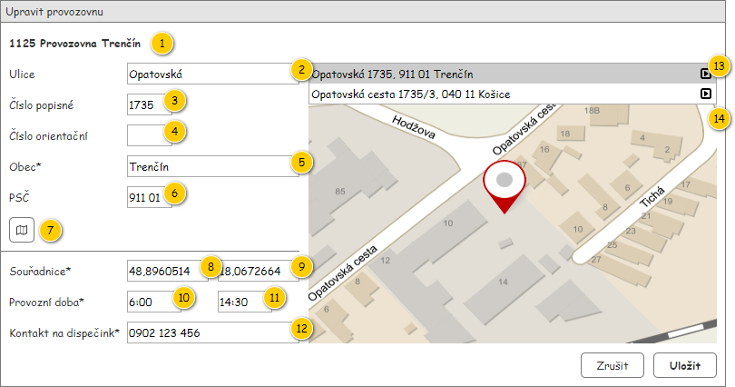

Formulář slouží k editaci entity Provozovna, která je jeho povinným vstupním parametrem.
Poznámka: Formulář vychází z .

| Callout | Komponenta | Nadpis | Typ komponenty | Příklad hodnoty | Hodnota | Výchozí hodnota | Formát | Zpřístupněná | Viditelná | Chování | Validace | Poznámka |
|---|---|---|---|---|---|---|---|---|---|---|---|---|
| 1 | Nadpis | – | Label | 1125 Provozovna Trenčín | Entita Provozovna. | – | – | Vždy | – | – | – | |
| 2 | Ulice | Ulice | TextBox | Opatovská | Entita Adresa – atribut Adresa entity Provozovna. | – | Vždy | Vždy | – | Maximálně 80 znaků. | – | |
| 3 | Číslo popisné | Číslo popisné | TextBox | 1735 | Entita Adresa – atribut Adresa entity Provozovna. | – | <Číslo popisné> | Vždy | Vždy | – | Maximálně 15 znaků. | – |
| 4 | Číslo orientační | Číslo orientační | TextBox | A | Entita Adresa – atribut Adresa entity Provozovna. | – | <Číslo orientační> | Vždy | Vždy | – | Maximálně 15 znaků. | – |
| 5 | Obec | Obec* | TextBox | Trenčín | Entita Adresa – atribut Adresa entity Provozovna. | – | Vždy | Vždy | – | Povinný údaj. Maximálně 80 znaků. | – | |
| 6 | PSČ | PSČ | TextBox | 911 01 | Entita Adresa – atribut Adresa entity Provozovna. | – | Vždy | Vždy | – | Maximálně 15 znaků. | – | |
| 7 | Nalezení adresy | – | Button
| – | – | – | – | Vždy | Vždy | Viz Dopředné geokódování. | – | – |
| 8 | Zeměpisná šířka | Souřadnice* | TextBox | 48,8960514 | Entita Provozovna. | – | Vždy | Vždy | – | Povinný údaj. Desetinné číslo. | – | |
| 9 | Zeměpisná délka | – | TextBox | 18,0672664 | Entita Provozovna. | – | Vždy | Vždy | – | Povinný údaj. Desetinné číslo. | – | |
| 10 | Provozní doba od | Provozní doba* | TimePicker | 6:00 | Entita Provozovna. | – | Vždy | Vždy | – | Povinný údaj. | – | |
| 11 | Provozní doba do | – | TimePicker | 14:30 | Entita Provozovna. | – | Vždy | Vždy | – | Povinný údaj. Vetší nebo rovno Čas od. | – | |
| 12 | Kontakt na dispečink | Kontakt na dispečink* | TextBox | 0902 123 456 | Entita Provozovna. | – | Vždy | Vždy | – | Povinný údaj. Maximálně 30 znaků. | – | |
| 13 | Nalezené adresy | – | Grid | – | Entita Adresa. | – | Pokud není dostupné Číslo orientační:
Pokud není dostupné Číslo popisné:
| Vždy | Pokud je při dopředném geokódování nalezena více než jedna adresa. | – | – | Tabulka obsahuje pouze jeden sloupec s formátovaným výpisem nalezené adresy. Hlavička tabulky není zobrazena. Řádek obsahuje tlačítko pro výběr požadované adresy (ikona: ra-location). |
| 14 | Mapa | – | Map | – | – | – | – | Vždy | Vždy | Viz Změna souřadnic. | – | – |
Může nastat situace, kdy není po zadání Adresy uživatelem dostupná hodnota pro atribut Stát. V takovém případě je pro nastavení použita konfigurační hodnota countryIsoCode (viz Konfigurační hodnoty).
Poznámka: Typickým případem je situace, kdy uživatel zadá adresu ručně – nepoužije např. dostupné geokódování.
| Odkaz | Stručný popis změny/doplnění |
|---|---|
| Získání hodnoty pro stát | Doplněn popis chování pro případ, že při zadání adresy není získán stát (naznačeno modře). |